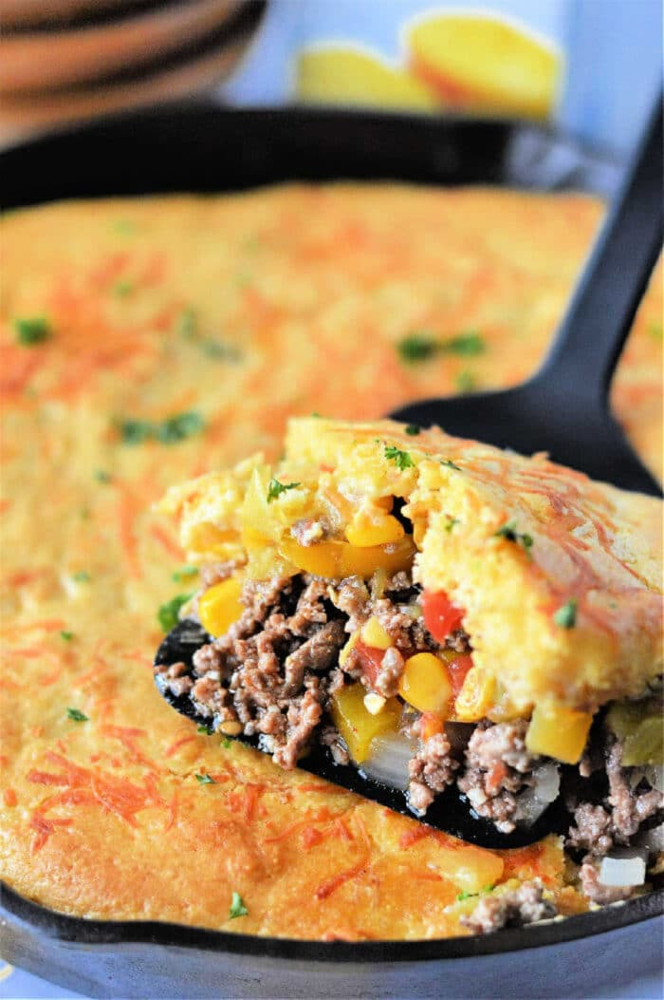

Home
Tamale Pie

Description
A very easy, delicious meal, this Tamale Pie recipe uses simple ingredients to turn a Tex-Mex classic into a dinner for 3-4 with ease.
Ingredients
- 1 lb Ground Beef
- 10 oz Red Enchilada Sauce
- 15 oz Corn, canned, drained
- 8.5 oz Jiffy Corn Bread Mix
- 1 tsp Garlic, minced
- 1/3 cup Milk
- 1 Egg
- 1 cup Cheese, cheddar or monterey jack
- 1/2 tsp Cumin
- 1/2 tsp Chipotle Powder
Instructions